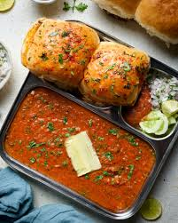

Pav Bhaji
Ingredients
- 1 medium onion, finely chopped
- 2 medium tomatoes, finely chopped
- 2 cloves garlic, minced
- 1 teaspoon ginger, grated
- 1 green chili, finely chopped (optional)
- 2 medium potatoes, boiled and mashed
- Pav Packets
Instructions
- Boil and mash potatoes, peas, and cauliflower; set them aside.
- Heat butter in a pan, sauté chopped onions until golden, then add garlic and ginger.
- Add chopped tomatoes and cook until soft and mushy.
- Stir in pav bhaji masala, red chili powder, and salt, then mix in the mashed vegetables.
- Simmer the mixture while mashing everything until smooth, adding water as needed for consistency.
- Toast pav with butter on a griddle, and serve with the bhaji, garnished with coriander, onions, and lemon wedges.

Additional Information
| Preparation Time |
10 minutes |
| Cooking Time |
20 minutes |